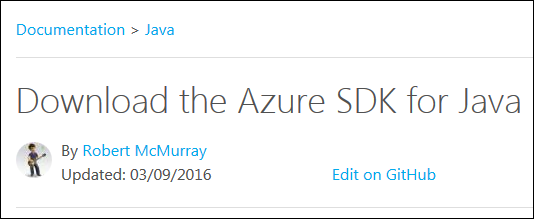
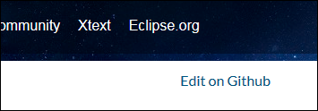
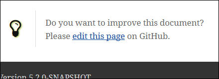
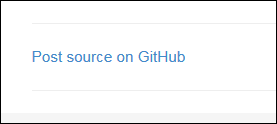
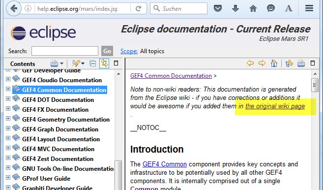

:repository: jmini/jmini.github.io
:branch: develop
Do you want to improve this documentation? Please gh:edit[].22 April 2016
In my opinion if you publish documentation online, you should always tell your readers how they can change/update it.
I picked up several examples of documentation hosted on GitHub. On each page there is an "Edit on GitHub" link. This eases the creation of pull requests.
Example 1: Microsoft Azure documentation (see this page for example):

Example 2: the Eclipse Xtend documentation:

Example 3: Eclipse Scout documentation (see the scout "hello world" page):

Example 4: My blog (see my last article for example):

And many other projects are following this best practice…
This isn’t a GitHub only stuff. The same pattern can be used if the documentation is hosted on a wiki engine. As an example the GEF4 documentation does it exactly like that:

If you are using asciidoctor for your documentation and if the sources are hosted on GitHub, you might be interested in the small extension I wrote: asciidoctorj-gh-edit. Short usage example:
:repository: jmini/jmini.github.io
:branch: develop
Do you want to improve this documentation? Please gh:edit[].A second example where more parameters are defined as arguments of the macro:
See gh:view[repository='asciidoctor/asciidoctor.org', branch='master', path="news/debuter-avec-asciidoctor.adoc", link-text='this article in french'] on GitHub.If you have a blog powered by JBake (like this one), you can add the code for the link creation in your templates. This way JBake generates the desired link on each page. I implemented it with some Groovy code included in the template. More details can be found on the JBake-user mailing list: Create a link "see blog post source on GitHub".